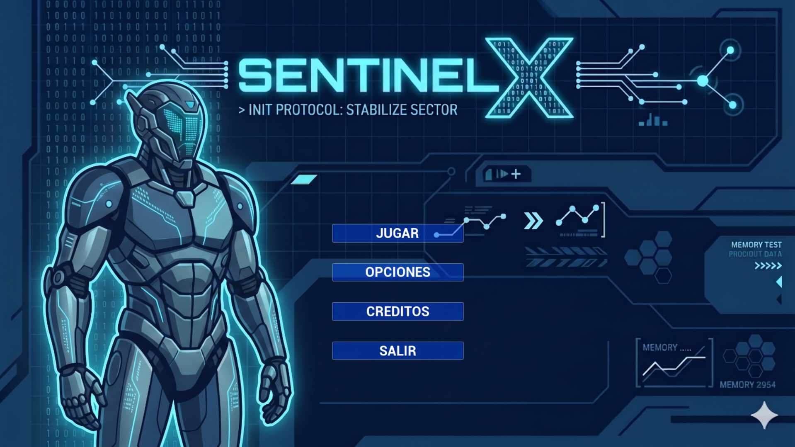
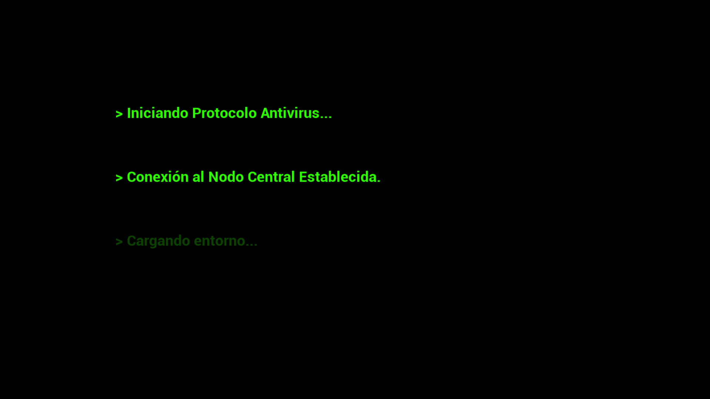
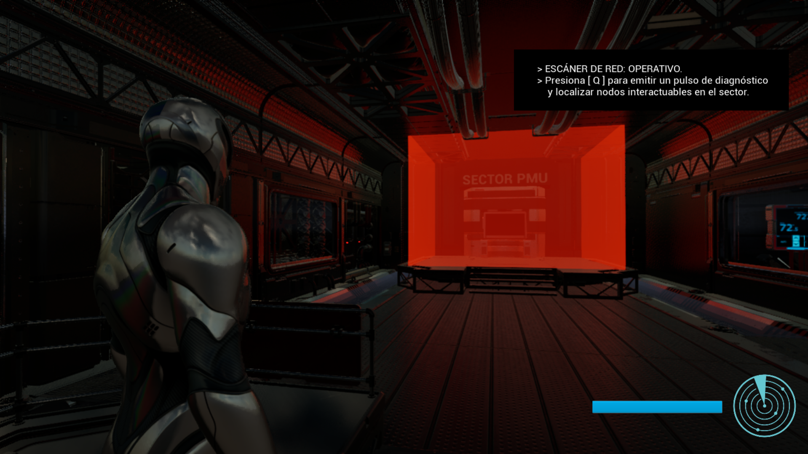
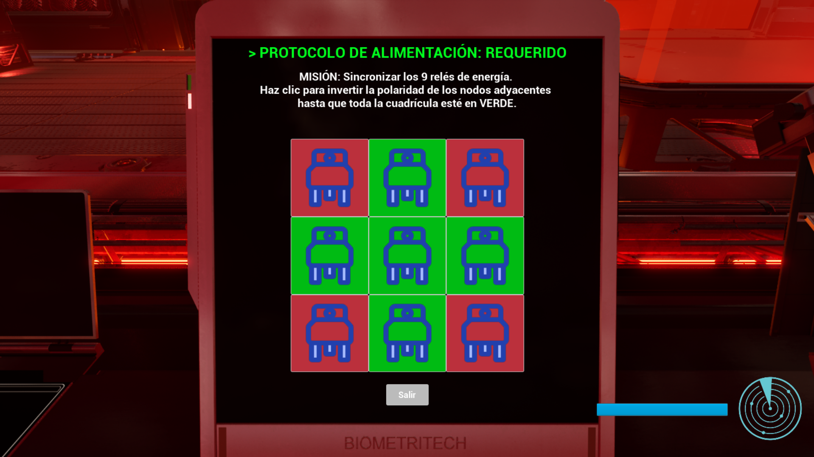

El Concepto
En este proyecto desarrollé un prototipo (vertical slice) de un juego 3D con temática de antivirus. Además del desarrollo técnico, me encargué de la fase de preproducción, redactando un Game Design Document (GDD) de 15 páginas para estructurar claramente todas las mecánicas y el flujo del juego antes de pasar al motor.
Mi Rol y Retos
Me encargué de programar las mecánicas de puzzles y el sistema de juego utilizando Blueprints en Unreal Engine 5. Uno de los mayores retos técnicos y visuales de este proyecto fue la creación e implementación de materiales de postprocesado (shaders) personalizados para simular un escáner dentro del entorno digital del juego.
Galería de Imágenes
Haz clic en las imágenes para ampliarlas:



